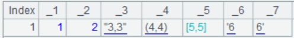

union()
Description:
Compute the union of sequence-type members in a sequence.
Synatax:
A.union(x)
Note:
The function gets union of sub-sequences of sequence A. It retains only one of the duplicate members in different sub-sequences, and does not treat members having same values in one sub-sequence as duplicates.
When parameter x is present, the function first computes the expression with each member of sequence A and then perform the union.
Parameter:
|
A |
A sequence whose members are sequences |
|
x |
An expression that returns a sequence; cannot be omitted when members of A are table sequences or record sequences |
Return value:
A sequence
Example:
When A is a sequence:
|
|
A |
|
|
1 |
=[[1,2,3,4,5],[3,7,8]].union() |
[1,2,3,4,5,7,8]; members having same value "3" appears only once |
|
2 |
=[[1,2,2],[3,4,4],[4]].union() |
[1,2,2,3,4,4]; there are two member "4" in the second sub-sequence, which are not treated as duplicates, so both are retained in the union result |
|
3 |
=[[1,2,2],[2,2,2,3],[2]].union() |
[1,2,2,2,3]; as there are three member "2" in the second sub-sequence, the final result also has three "2"s |
When A is a table sequence or a record sequence:
|
|
A |
|
|
1 |
=demo.query("select * from STUDENTS where ID>3") |
|
|
2 |
=demo.query("select * from STUDENTS1") |
 |
|
3 |
=[A1,A2].union(~.(NAME)) |
["Lauren","Michael","John","Nicholas","Emily","Elizabeth","Sean"], where "Lauren" is a duplicate in both NAME sequences of [A1,A2], so only one is retained |